Dựng nhân viên AI: Project, Skill và connector
Biến bản vẽ quy trình của Module 04 thành một nhân viên AI có phòng làm việc, sổ tay và quyền vào app của đội.
Biến AI thành chuyên gia riêng: dựng Project cho từng vai trò
Sau bài này, vai trò làm quy trình đầu tiên của bạn có một Project riêng, có hướng dẫn và tài liệu dùng lại mỗi tuần.
Một vai trò, một Project
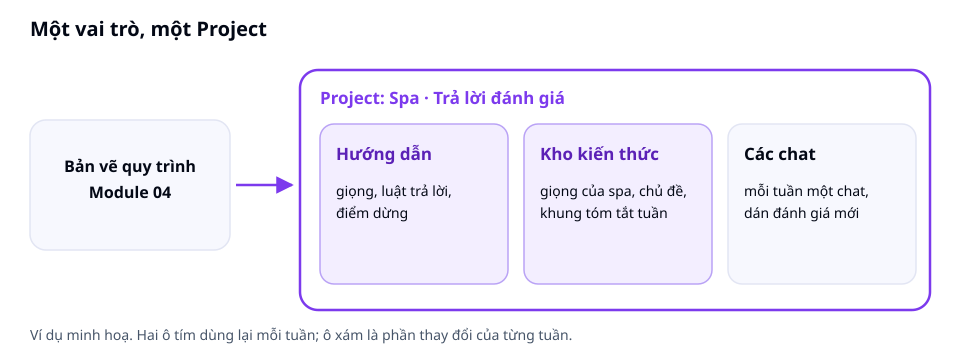
GPT tuỳ chỉnh và Gem đang được thay
- Gemini: Gem chuyển thành kỹ năng. Gem chỉ đọc từ 17/11/2026, bị gỡ ngày 17/12/2026 (tài khoản cá nhân).
Đang dùng Gem? Chép sang Skill của Gemini trước 17/12/2026.
Ảnh chụp trang trợ giúp Google "Giới thiệu về quá trình chuyển đổi từ Gem sang kỹ năng", ngày 20/11/2026. Khung số do The AI Growth vẽ thêm.
Phòng làm việc riêng cho một vai trò
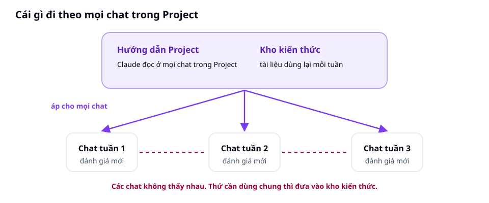
Hướng dẫn và kho kiến thức đi theo mọi chat trong Project.
Tài liệu dùng chung phải nằm trong kho kiến thức.
Điều muốn Claude làm theo phải nằm trong hướng dẫn.
Mọi gói dùng được Project, gói Free tối đa 5
- Mọi gói, kể cả Free. Gói Free tạo tối đa 5 Project.
- Tên và mô tả: Claude không đọc hai ô này.
Ảnh chụp trang trợ giúp Anthropic "How can I create and manage projects?", ngày 20/11/2026. Khung số do The AI Growth vẽ thêm.
Project nằm ở mục Dự án trên thanh bên
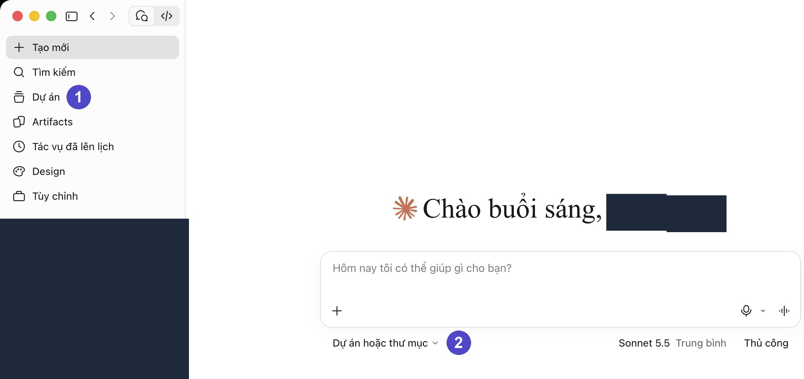
- Dự án: mở danh sách Project, tạo Project mới.
- Dự án hoặc thư mục: chọn Project cho chat bạn sắp mở.
ChatGPT cũng có Project, cùng cách nghĩ
Thanh bên → Projects → hộp "Create project".
Bạn dùng app nào thì dựng Project ở app đó. Cách chia hướng dẫn, kho và chat giữ nguyên.
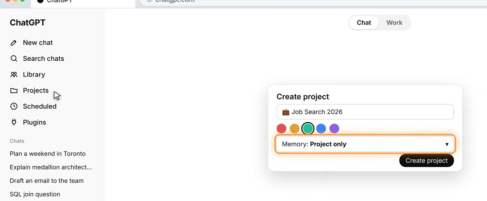
Khung hình video YouTube về Project trên ChatGPT, đăng ngày 08/11/2026.
Thứ dùng lại để ở Project. Dữ liệu từng tuần dán vào chat
| Thứ | Để ở đâu | Vì sao |
|---|---|---|
| Giọng và luật trả lời | Hướng dẫn Project | Áp cho mọi chat |
| Danh sách chủ đề, mẫu đã duyệt | Kho kiến thức | Dùng lại mỗi tuần |
| Đánh giá của tuần này | Chat mới trong Project | Mỗi tuần một lần |
Claude tự chuyển sang tìm đoạn liên quan (RAG).
Có ở gói trả phí: Pro, Max, Ultra, Team, Enterprise. Sức chứa tăng tới 10 lần (trang hỗ trợ Anthropic, kiểm 20/11/2026).
Viết theo 5 phần của Module 03, lấy nội dung từ bản vẽ quy trình
Bối cảnh
Bạn là ai, làm cho ai.
Việc cần làm
Các việc hay giao.
Dữ liệu đầu vào
File nào trong kho, dùng lúc nào.
Mẫu đầu ra
Bảng, cột, độ dài.
Giới hạn, điểm dừng
Điều cấm, chỗ chờ người duyệt.
Khoảng 230 chữ, đủ 5 phần
Ba ô cần điền: tên, hướng dẫn, tài liệu

- Name: đặt theo vai trò, ví dụ "Spa · Trả lời đánh giá".
- Instructions: dán hướng dẫn 5 phần.
- Choose location: chỗ lưu Project trên máy (app Desktop).
Nhờ Claude viết hướng dẫn Project từ bản vẽ quy trình
- 1Project là phòng làm việc của một vai trò: hướng dẫn và kho áp cho mọi chat.
- 2Thứ dùng lại để ở Project. Dữ liệu từng tuần dán vào chat.
- 3Hướng dẫn Project lấy từ bản vẽ quy trình, viết ngắn theo 5 phần.
Skill là gì? Dạy AI một lần, cả đội dùng lại mỗi ngày
Sau bài này, bạn hiểu Skill, Project, connector, plugin khác nhau ở đâu và đọc được một file SKILL.md.
Dạy một lần, Claude tự mở khi việc khớp
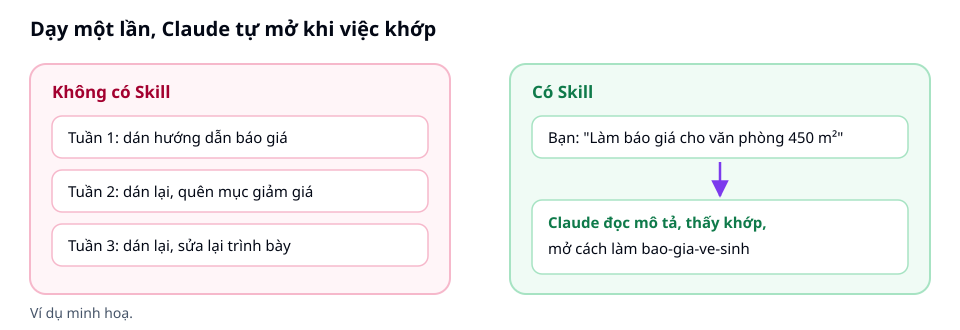
Skill là một thư mục ghi cách làm một việc.
File SKILL.md có tên, mô tả, các bước. Kèm file mẫu khi cần.
Prompt, Project, Skill, connector: Claude đọc khi nào?
| Thứ | Đưa cho Claude gì | Claude đọc khi nào |
|---|---|---|
| Prompt | Việc của lần này | Mỗi lần bạn gửi |
| Project | Hướng dẫn và tài liệu của một vai trò | Mọi chat trong Project |
| Skill | Cách làm một việc, kèm file mẫu | Khi việc khớp mô tả, ở bất kỳ chat nào |
| Connector | Quyền vào app: Gmail, Drive, Notion | Khi việc cần dữ liệu trong app đó |
Skill có ở mọi gói, cần bật chạy mã
- Mọi gói, từ Free tới Enterprise. Tính năng này cần bật chạy mã.
Ảnh chụp trang trợ giúp Anthropic "Use skills in Claude", ngày 20/11/2026. Khung số do The AI Growth vẽ thêm.
Bật "Chạy mã trên đám mây" để dùng Skill
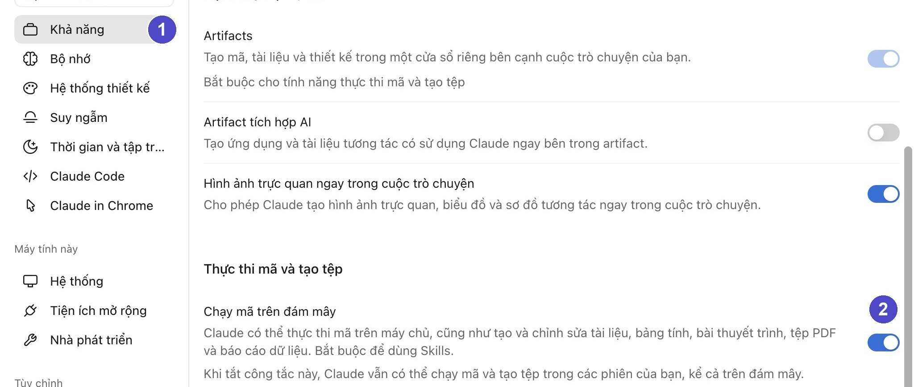
- Khả năng: tab trong Cài đặt, nhóm Tùy chọn.
- Chạy mã trên đám mây: dòng mô tả ghi "Bắt buộc để dùng Skills".
Cả ba app đang đi về Skill
Gemini đang thay Gem bằng Skill: trang Customize → Skills.
ChatGPT ngừng GPT tuỳ chỉnh ngày 11/12/2026 và chuyển sang plugin.
Cách làm của bài này dùng được cho cả ba app.
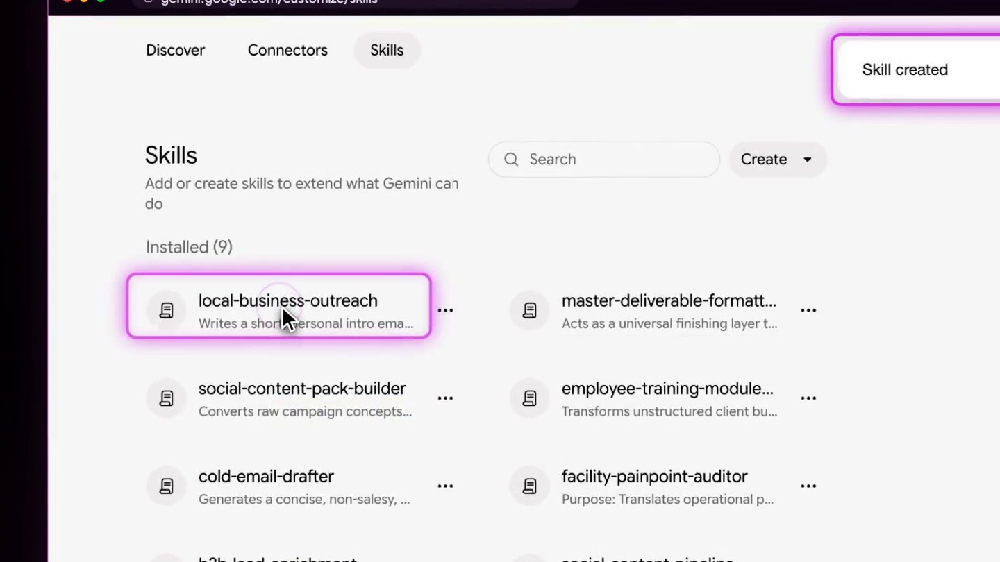
Khung hình video YouTube về Skill trên Gemini, đăng ngày 12/11/2026.
Một thư mục, một file chính
Tên thư mục trùng tên Skill. File chính là SKILL.md. File mẫu đi kèm khi cần.
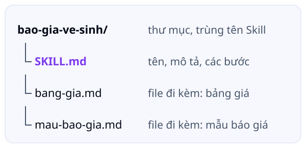
name và description
Chữ thường, số, gạch ngang.
Skill làm gì, khi nào dùng. Mình khuyên dưới 200 ký tự.
Claude chỉ đọc mô tả, tới khi việc khớp
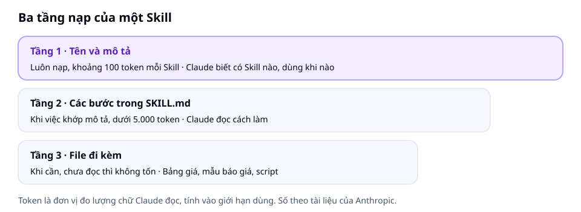
Chỉ cài Skill từ nguồn tin cậy.
Kể cả Skill đồng nghiệp gửi: mở SKILL.md đọc trước khi bật.
Plugin gói Skill, connector và sub-agent cho một vai trò
- Gói trả phí: Pro, Max, Ultra, Team, Enterprise. Gói Free không có.
- Một gói cho một vai trò: cài một lần, có đủ Skill và connector.
Ảnh chụp trang trợ giúp Anthropic "Use plugins in Claude", ngày 20/11/2026. Khung số do The AI Growth vẽ thêm.
Trong chat: nút dấu cộng
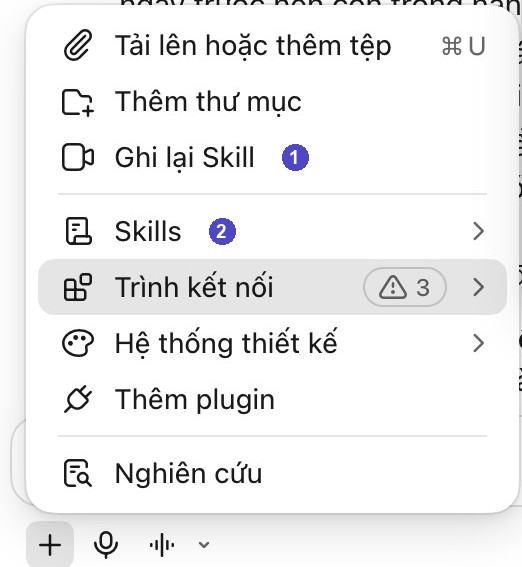
Ảnh chụp app Claude Desktop ngày 11/11/2026: menu dấu cộng.
- Ghi lại Skill: cách dựng Skill bằng cách ghi màn hình (bài 6.3).
- Skills: bật, tắt Skill cho chat này.
Chọn 3 bước nên viết thành Skill
- 1Skill ghi cách làm một việc. Claude tự mở khi việc khớp mô tả.
- 2Mô tả ngắn, nói rõ khi nào dùng, là phần quan trọng nhất.
- 3Plugin gói nhiều Skill và connector cho một vai trò, có ở gói trả phí.
Bài tập: dựng Skill đầu tiên từ số 0 cho việc thật của bạn
Sau bài này, bạn có một Skill của chính mình, đã chạy đạt trên 3 dữ liệu thật.
Từ một bước trong bản vẽ tới Skill chạy được
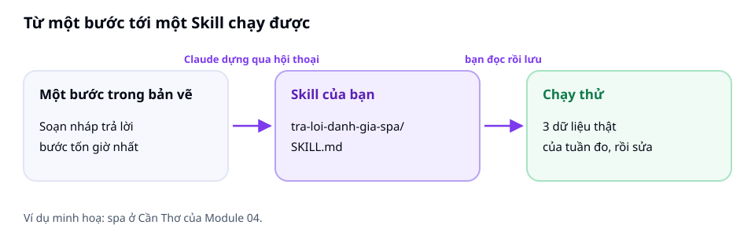
Định nghĩa "đạt" trước khi dựng
Việc đầu trong danh sách 3 việc của bài 6.2
Đủ 3 dòng đầu của Thẻ chuẩn bị (bài 4.3), có 3 kết quả đã duyệt.
Kết quả khớp 3 bản đã duyệt
Không cần bạn sửa tay.
Điền phiếu mô tả cách làm 6 dòng
File mẫu có sẵn trong bài.
Một việc, hoặc 2–3 bước liền nhau dùng chung dữ liệu
| Nên | Không nên | Vì sao |
|---|---|---|
| Gộp 2–3 bước liền nhau: phân loại, đánh dấu, soạn nháp | Gộp cả quy trình 8 bước vào một Skill | Skill to thì khó kiểm chỗ sai, khó sửa từng bước |
Phiếu mô tả cách làm: 6 dòng
- 1Điền phiếu mô tả cách làm, dán 2–3 kết quả đã duyệt. Che thông tin riêng trước.
- 2Mở chat mới, nhờ Claude dựng Skill từ phiếu. Trả lời các câu Claude hỏi lại.
- 3Đọc SKILL.md trước khi lưu.
- 4Lưu Skill, kiểm ở Tùy chỉnh → Skills rằng Skill đã bật.
- 5Mở chat mới, giao việc bằng lời bình thường trên 3 dữ liệu thật. So với bản đã duyệt. Ghi số phút.
Ba thứ kiểm trong SKILL.md
Mô tả nói khi nào dùng
Dưới 200 ký tự.
Có mục "Không được làm"
Điều cấm của việc này.
Bước gửi ra ngoài dừng ở bản nháp
Người duyệt rồi mới gửi, đăng.
Skill đã lưu thì phải đang bật
- Free, Pro, Max, Ultra: tải Skill của bạn ở Customize → Skills.
- Cài đặt → Khả năng: bật chạy mã (bản mới ghi "Create and edit files").
- Customize → Skills: bật tắt từng Skill. App tiếng Việt: Tùy chỉnh → Skills.
Ảnh chụp trang trợ giúp Anthropic "Use skills in Claude", ngày 20/11/2026. Khung số do The AI Growth vẽ thêm.
Skill tra-loi-danh-gia-spa gộp 3 bước liền nhau
Ghi màn hình, hoặc tự viết từ mẫu trống
Ảnh chụp app Claude Desktop ngày 11/11/2026: menu dấu cộng.
- Ghi lại Skill: bạn làm mẫu, Claude ghi màn hình rồi viết Skill. Có ở Pro trở lên, Claude cho Mac.
- Skills: chỗ tải lên Skill bạn tự viết. Viết SKILL.md từ mẫu trống, nén thư mục thành .zip.
- 1Một Skill, một việc, có định nghĩa "đạt" trước khi dựng.
- 2Đọc SKILL.md trước khi lưu, chạy trên 3 dữ liệu thật rồi sửa.
Nối AI với Gmail, Drive, Calendar, Notion
Sau bài này, bạn hiểu connector làm được gì, nối app nào trước, và giữ nút gửi trong tay mình.
Dữ liệu vào từ Drive, kết quả ra thành bản nháp Gmail
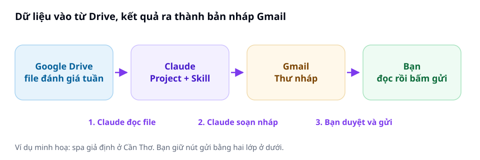
Claude vào app của bạn, với đúng quyền của bạn
- Mọi người dùng, kể cả gói Free, trên web, Desktop và điện thoại.
- Đúng quyền của bạn: file bạn không mở được thì Claude cũng không mở được.
Ảnh chụp trang trợ giúp Anthropic "Use connectors to extend Claude's capabilities", ngày 20/11/2026. Khung số do The AI Growth vẽ thêm.
Cài đặt → Trình kết nối
Kho có sẵn Google Drive, Gmail, Google Calendar, Notion và nhiều app khác.
Bấm dấu cộng cạnh app, đăng nhập tài khoản của app đó để cấp quyền.
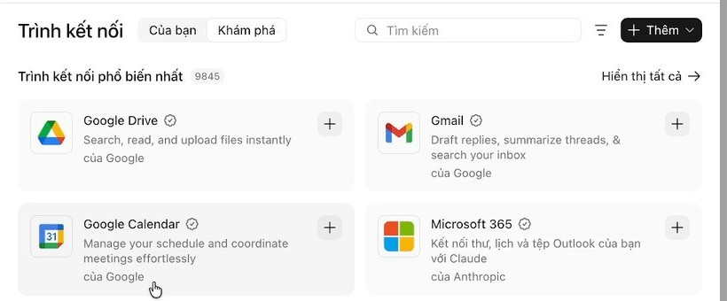
Ảnh chụp app Claude Desktop: Cài đặt → Trình kết nối (khung video 08/11/2026).
Mỗi connector làm được gì
| App | Claude làm được | Lưu ý |
|---|---|---|
| Gmail | Tìm, đọc, soạn nháp, gửi, trả lời, chuyển tiếp | Gửi được email: giữ nút gửi (phần sau) |
| Google Calendar | Xem, tạo, sửa, xoá sự kiện, tìm giờ trống chung | Tạo lịch là hành động ra ngoài |
| Google Drive | Tìm, đọc Sheets, Slides, PDF, file Office, lưu file | Chia sẻ, đưa vào thùng rác: mặc định hỏi trước |
| Notion | Tìm, tạo và cập nhật trang, hỏi database | Do Notion làm, cần đăng nhập |
Bật đúng connector cho đúng chat
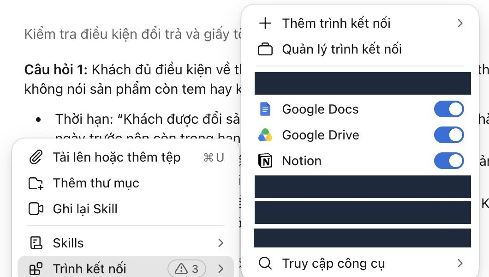
Ảnh chụp app Claude Desktop: dấu cộng → Trình kết nối, mỗi app một công tắc.
- Dấu cộng → Trình kết nối: bật tắt từng app cho chat này.
- Connector tốn token. Tắt cái không dùng.
Nối Gmail không có nghĩa là cho Claude gửi thay bạn.
Connector Gmail gửi được email. Bạn giữ nút gửi bằng hai lớp.
Prompt chỉ cho nháp, và chế độ Thủ công
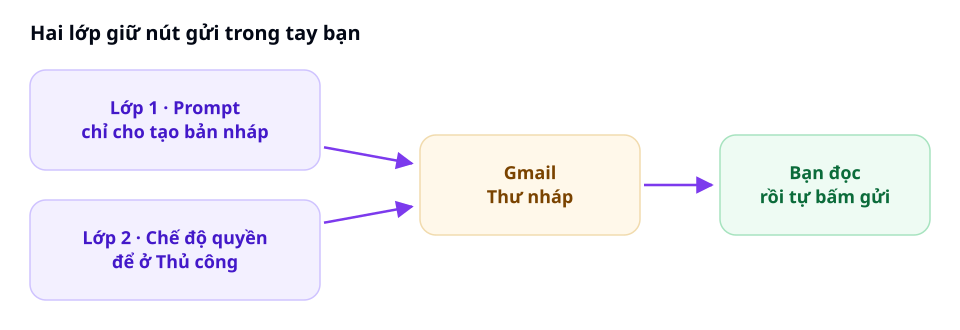
Chat có bước gửi thì để Thủ công
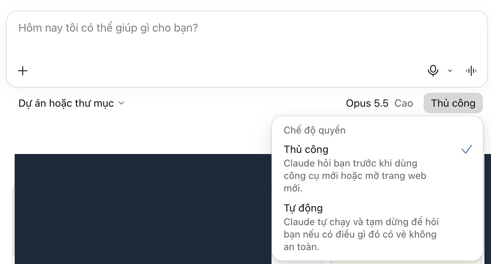
Ảnh chụp app Claude Desktop: menu Chế độ quyền dưới ô nhập.
- Thủ công: Claude hỏi bạn trước khi dùng công cụ.
- Tự động: mặc định ở Pro, Max, Ultra, Team. Claude tự quyết với công cụ ghi như gửi email.
Chủ tổ chức chặn công cụ gửi cho cả đội
- Ví dụ: cho Claude tìm và tóm tắt email, nhưng chặn gửi.
- Ba mức cho mỗi công cụ: Always allow, Needs approval, Blocked. Áp cho cả tổ chức.
Ảnh chụp trang trợ giúp Anthropic "Use connectors to extend Claude's capabilities", mục "Restrict actions within connected services", ngày 20/11/2026. Khung số do The AI Growth vẽ thêm.
- 1Connector cho Claude đọc và làm việc trong app bạn dùng, có từ gói Free.
- 2Bật đúng connector cho đúng chat. Connector tốn token.
- 3Giữ nút gửi bằng hai lớp: prompt chỉ nháp và chế độ Thủ công.
MCP là gì mà ai cũng nhắc? Hiểu đủ dùng
Sau bài này, bạn biết app nào của đội nối được ngay, app nào phải hỏi hãng, app nào cứ dán tay.
Một chuẩn chung, nhiều app
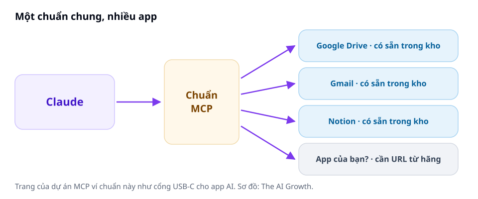
MCP giống cổng USB-C cho app AI
- Như USB-C: một kiểu cắm chung để app AI nối với hệ thống bên ngoài.
- MCP ở giữa: bên trái là app AI, bên phải là dữ liệu và công cụ.
Ảnh chụp trang Model Context Protocol "What is the Model Context Protocol (MCP)?", ngày 20/11/2026. Khung số do The AI Growth vẽ thêm.
Mỗi máy một remote, hay một trợ lý điều khiển tất cả
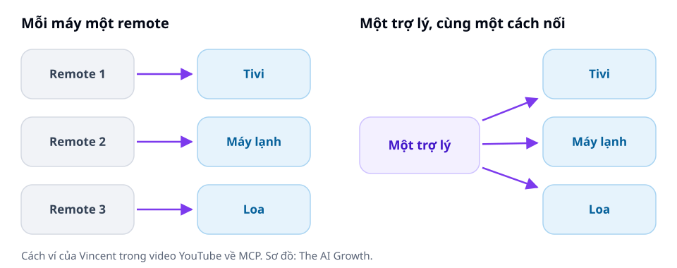
App đó có thể nối với Claude, kể cả khi chưa có trong kho.
Bạn xin hãng URL của MCP server chính thức, rồi thêm custom connector.
Thử bậc rẻ nhất trước
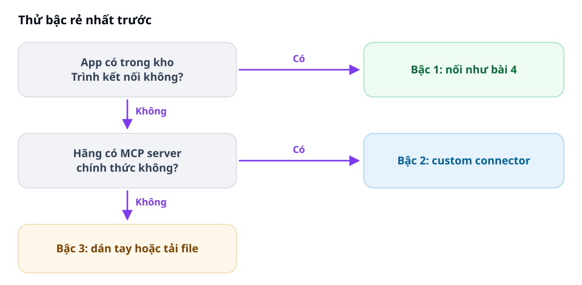
Có trong kho: nối như bài 6.4.
Hãng có MCP server: hỏi hãng.
Dán tay hoặc xuất file rồi tải lên.
Custom connector: gói Free thêm được 1
- Mọi gói, từ Free tới Enterprise. Gói Free giới hạn 1 custom connector.
- Đường đi: Customize → Connectors → Add → Custom → Web, rồi dán URL của hãng.
Ảnh chụp trang trợ giúp Anthropic "Use connectors to extend Claude's capabilities", mục "Custom connectors", ngày 20/11/2026. Khung số do The AI Growth vẽ thêm.
Chia app của đội vào 3 bậc
- 1MCP là chuẩn chung để Claude nối với app khác.
- 2Thử kho có sẵn trước, rồi custom connector, rồi dán tay.
- 3Chỉ nối server tin cậy. Gói Free có 1 custom connector.
Chia sẻ Skill và Project cho cả đội: gói nào làm được
Sau bài này, đồng đội dùng được Skill và hướng dẫn Project của bạn, và bạn biết khi nào đáng lên gói Team.
Hai đường chia sẻ, theo gói đang dùng
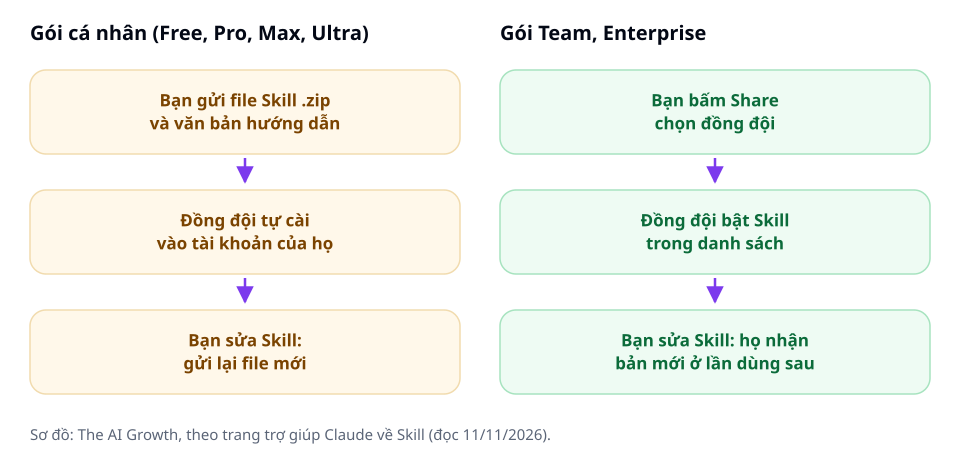
Gói nào đưa được gì
| Thứ | Gói cá nhân: Free, Pro, Max, Ultra | Gói Team, Enterprise |
|---|---|---|
| Project | Không chia sẻ được. Gửi hướng dẫn và file để đồng đội dựng lại | "Share project", quyền chỉ xem hoặc được sửa |
| Skill | Mỗi người tự tải file .zip lên tài khoản của mình | Chia sẻ cho người cụ thể, tự nhận bản mới |
| Connector | Mỗi người tự nối tài khoản của mình | Chủ tổ chức bật cho tổ chức, mỗi người vẫn tự đăng nhập |
Chia sẻ Project chỉ có ở Team và Enterprise
- Team, Enterprise: chia sẻ trong tổ chức, trừ khi admin tắt.
- Nút "Share project" nằm bên phải tên Project.
- Can view chỉ xem và chat. Can edit sửa được hướng dẫn và kho.
Ảnh chụp trang trợ giúp Anthropic "How can I create and manage projects?", mục "Share projects", ngày 20/11/2026. Khung số do The AI Growth vẽ thêm.
Bốn dấu hiệu (theo mình)
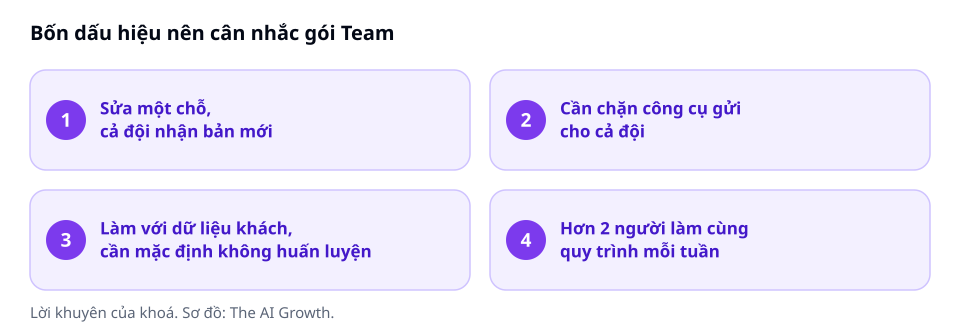
Ghế Standard và Premium, từ 2 người
- Standard: 25 USD mỗi người mỗi tháng, 20 USD nếu trả năm.
- Premium: 125 USD, 100 USD nếu trả năm.
- Tối thiểu 2 người.
Ảnh chụp trang trợ giúp Anthropic "What is the Team plan?", mục "How much does the Team plan cost?", ngày 20/11/2026. Giá chưa gồm thuế. Khung số do The AI Growth vẽ thêm.
Con số để bạn so, không phải lời khuyên mua
150 USD mỗi tháng
120 USD mỗi tháng
20 USD mỗi tháng
- 1Gói cá nhân chia sẻ bằng file và văn bản. Gói Team chia sẻ bằng nút Share.
- 2Lên Team khi đội cần sửa một chỗ cho cả đội, chặn công cụ gửi, hoặc giữ dữ liệu khách.
Tiếp theo: Module 07
Nhân viên AI marketing: giọng thương hiệu, bài cho 5 kênh, ảnh, landing page, bài dài và motion video.